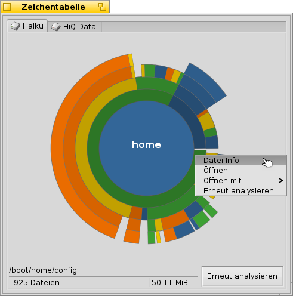

Deutsch
Deutsch Français
Français Italiano
Italiano Русский
Русский Español
Español Svenska
Svenska 日本語
日本語 Українська
Українська 中文 ［中文］
中文 ［中文］ Português
Português Suomi
Suomi Slovenčina
Slovenčina Magyar
Magyar Português (Brazil)
Português (Brazil) English
English Datenträgerbelegung
Datenträgerbelegung
| Deskbar: | ||
| Ort: | /boot/System/apps/Datenträgerbelegung | |
| Einstellungen: | ~/Konfiguration/settings/DiskUsage |
Datenträgerbelegung zeigt graphisch aufbereitet, für was der Speicherplatz einer Partition verwendet wird.
Ein hilfreiches Werkzeug, wenn man sich fragt: Wo sind eigentlich die ganzen Terabyte freier Speicherplatz hingekommen?

Die konzentrischen Ringe repräsentieren die verschiedenen Ebenen im Verzeichnisbaum. Im obigen Bild steht der Kreis in der Mitte für das Benutzerverzeichnis /boot/home/. Jedes Ring-Segment um diesen Kreis steht für eine Datei oder ein Verzeichnis unterhalb von /boot/home/. MIt jedem weiter außen gelegenen Segment gelangt man tiefer in die Verzeichnisstruktur. Für tief verschachtelte Verzeichnisse muss man eventuell die Größe des Programmfensters anpassen.
Über das Menü über der Graphik kann man zwischen den eingebundenen Partitionen wechseln. Bevor die Belegung einer Partition angezeigt werden kann, muss sie natürlich erst eingelesen werden. Da dies bei großen Partitionen etwas dauern kann, lassen sich nebenher andere Partitionen betrachten, während dieser Durchlauf im Hintergrund weitergeht.
- Wäre die Darstellung einer Datei oder eines Ordners kleiner als 2° des Kreises, wird sie nicht angezeigt.
- Die Anzahl der in einem Ordner enthaltenen Dateien beinhaltet sämtliche Unterordner, wobei Unterordner selbst ebenfalls als Datei zählen.
- DiskUsage ignoriert symbolische Verknüpfungen.
In der Statuszeile am unteren Rand des Programmfensters werden Informationen über das jeweilige Segment angezeigt, über dem sich die Maus gerade befindet.
Ein Rechtsklick auf ein Segment zeigt ein Kontextmenü um Informationen () anzuzeigen, das Objekt im Tracker () oder mit einem anderen Programm () zu öffnen, oder einen Ordner erneut einzulesen ().
Durch einen Linksklick wird eine Datei oder Verzeichnis zum Kreis in der Mitte.
Ein Linksklick auf den Mittelkreis wechselt in das übergeordnete Verzeichnis.
Dateien oder Ordner können direkt aus Datenträgerbelegung herausgezogen werden; hierbei werden sie an den neuen Ort kopiert. Umgekehrt wird eine Datei, beziehungsweise Ordner zum Mittelkreis, wenn sie in das Datenträgerbelegung Fenster gezogen wird.